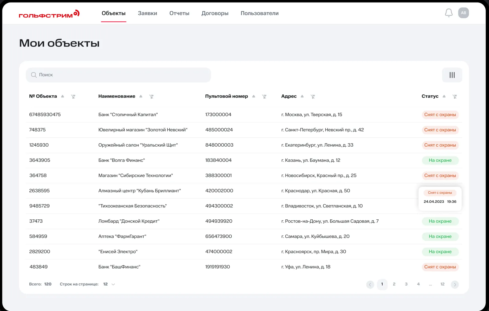
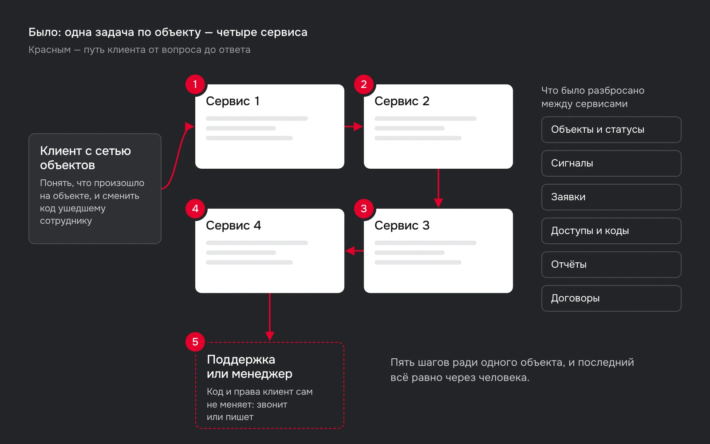
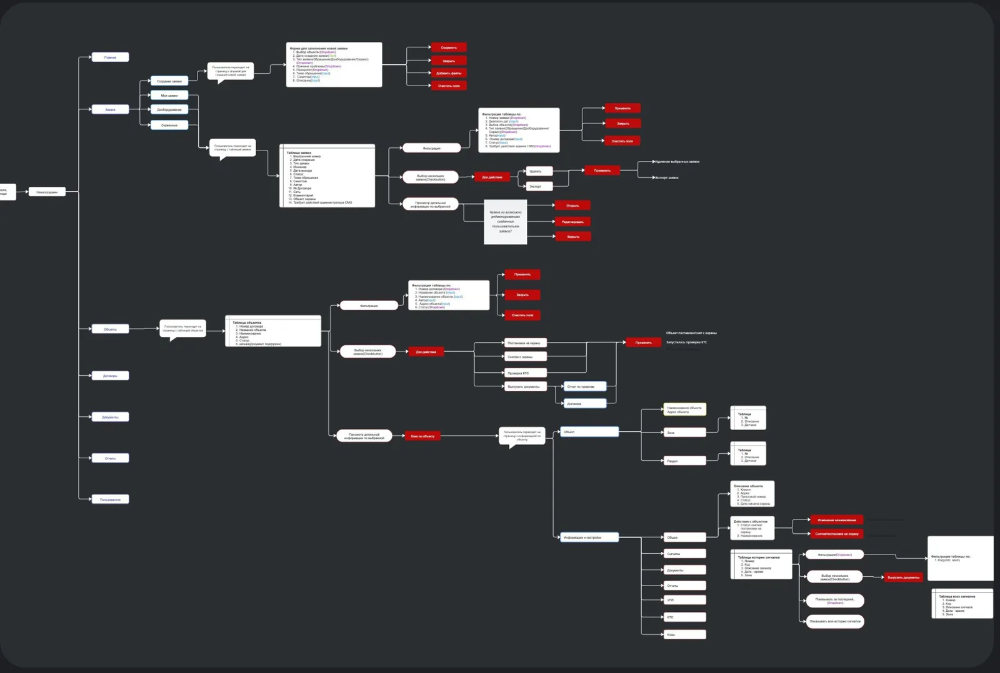
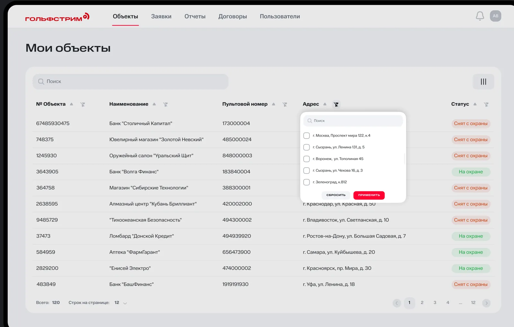
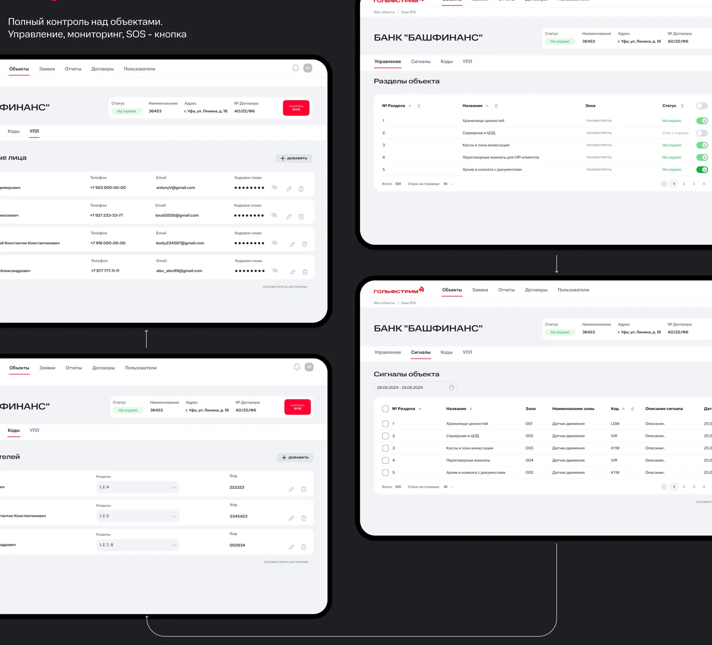
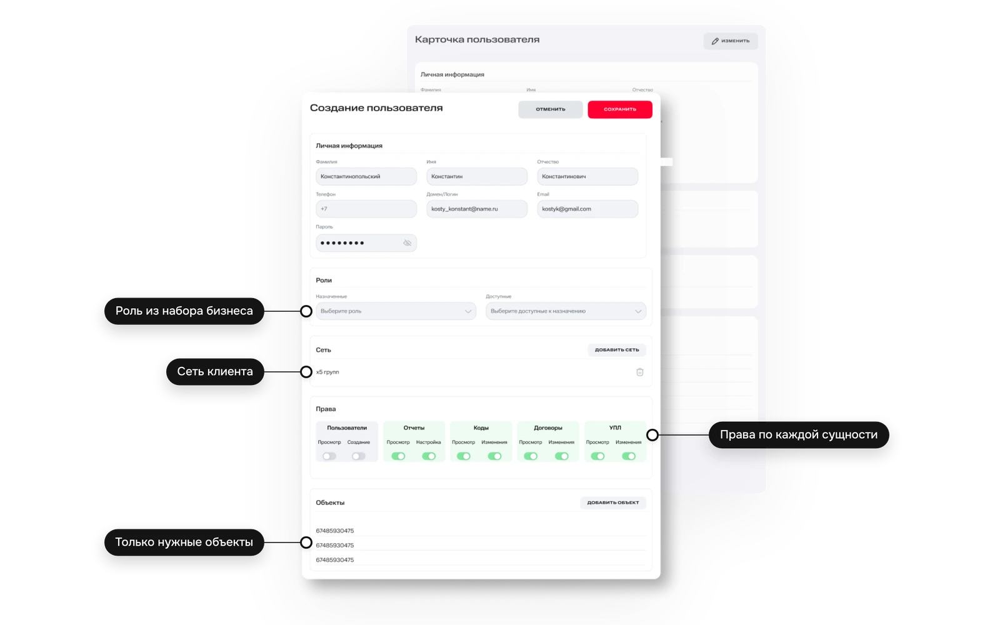

Данные компании после релиза.
Гольфстрим: платформа мониторинга и управления объектами охраны
Product Designer в команде с PM, разработчиками и бизнес-заказчиком
Структура и сценарии: список объектов, карточка объекта, права доступа, заявки и отчёты
Гольфстрим охраняет объекты в 200 городах. Платформа нужна корпоративным клиентам, у которых 50–100+ объектов.
Следит за охраной всех точек, меняет коды ушедшим сотрудникам.
Ведёт сотни объектов и заявки по ним.
Разбирают сигналы и заявки, выдают права.
Структура и сценарии. Роли и права задавал бизнес, я решала, как ими управлять в интерфейсе.
Чтобы решить одну задачу по объекту, клиент проходил четыре сервиса и в конце всё равно звонил менеджеру.

Четыре интерфейса
Функции управления объектом разнесены по разным сервисам.
Всё через поддержку
Код, права и статус меняли через менеджера. Права одни на всех.
Сотни объектов
Трудно найти нужный и вовремя заметить критическое событие.
Снизить нагрузку на поддержку
Поговорила со всеми тремя пользователями старой системы и разобрала четыре сервиса: какие данные и действия в них повторяются.
Статус охраны нужен без посредника
→Статус стоит в списке объектов и обновляется сам.
Работа начинается с объекта
→Всё об объекте переехало в его карточку.
Права нужно выдавать точечно
→Права настраиваются по сущностям и объектам.
Пять решений, и все выросли из одного: центр системы — объект, а не функция.
Наверху пять разделов: объекты, заявки, отчёты, договоры, пользователи. Разделы, сигналы, коды и ответственные живут в карточке объекта.
ПочемуПочти любой вопрос клиента начинается с конкретного объекта.

Информационная архитектура
Фильтр по каждому полю: статус, регион, номер, адрес. Статус охраны обновляется в реальном времени.
ПочемуУ клиента 50–100+ объектов сразу. Таблицу быстрее сканировать и сравнивать.

Список объектов с фильтрами
Объект состоит из разделов: хранилище, серверная, кассы. Каждый ставят на охрану переключателем прямо в строке, журнал сигналов рядом.
ПочемуВопрос «что произошло и когда», ради которого звонили в поддержку, закрывается на одном экране.

Карточка объекта: разделы, сигналы, коды
На одном экране роль, сеть и права на просмотр и изменение по каждой сущности, плюс конкретные объекты для сотрудника.
ПочемуАдминистратор настраивает доступ без инструкции и без поддержки.

Создание пользователя и права по сущностям
Заявка создаётся по объекту: статус, инженер, дата выезда и чат с поддержкой внутри. Отчёты разовые за любой период и регулярные по расписанию.
Заявка и чат по ней
Отчёты: моментальные и по расписанию
Задачи от бизнеса
Объединить четыре сервиса, снизить нагрузку на поддержку, привести интерфейс к стилю МТС.
Роли и права
Набор ролей и прав определял бизнес. Я отвечала за то, как ими управлять в интерфейсе.
Дизайн-система
Макеты в UI-ките компании, новые компоненты только под таблицы и формы прав.
Объём релиза
Состав и порядок сценариев согласовывали с бизнес-заказчиком.
Каждое решение прошло четыре проверки до релиза.
Данные компании после релиза.
Перенести центр системы с функций на объект. Остальные решения выросли из него.
Договорилась бы об UX-метриках до релиза, чтобы мерить не только операционные показатели.
Массовые операции: охрана, коды и доступы сразу для группы объектов.